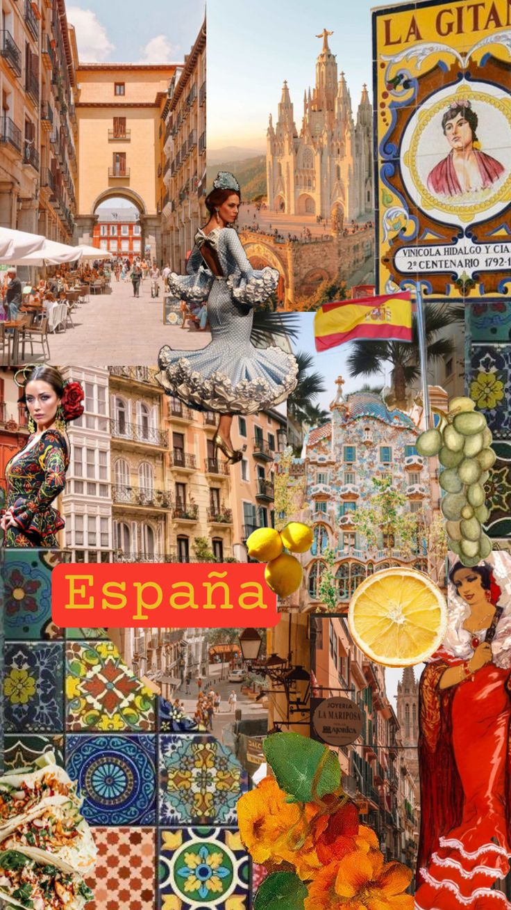
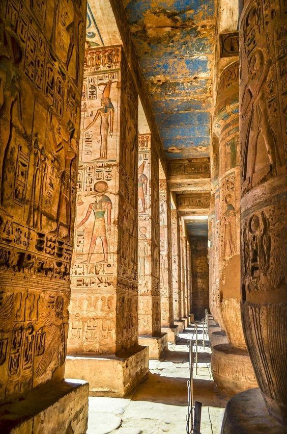
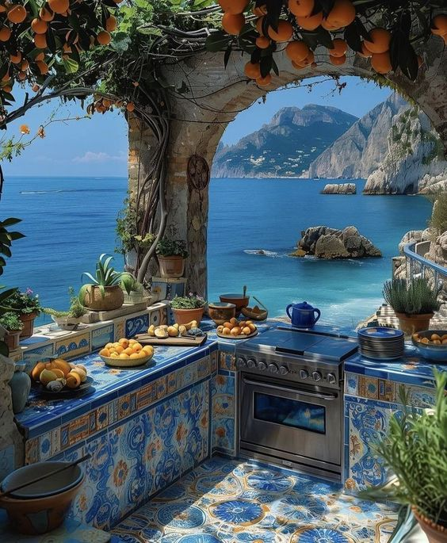

Morocco is a country located in North-West Africa, known for its diverse geography and rich cultural heritage. It combines the Atlas Mountains, the vast Sahara Desert, and stunning coastlines along the Atlantic Ocean and the Mediterranean Sea. Cities like Marrakech and Fes are famous for their historical legacy, unique architecture, and vibrant traditional markets. Morocco is a crossroads of Arab, Berber, and Mediterranean cultures.
Activities to do in Morocco
1. Casablanca
Visit the Hassan II Mosque
2. Marrakech
Explore the souks of the Medina
3. Fes
Discover the ancient medina
4. Agadir
Relax on the beaches
5. Chefchaouen
Wander the blue streets
Cities, Regions, Languages, and Traditions of Morocco
City
Region
Languages
Traditions
Casablanca
Grand Casablanca
Arabic, French
Celebrating Mawlid (birth of the Prophet Muhammad)
Marrakech
Marrakech-Safi
Arabic, French, Berber
Traditional Moroccan weddings
Fes
Fes-Meknes
Arabic, French, Berber
Fez Festival of World Sacred Music
Agadir
Souss-Massa
Arabic, Berber, French
Surfing and beach culture
Chefchaouen
Tangier-Tétouan-Al Hoceima
Arabic, Berber, Spanish
Handicrafts and weaving traditions
0 liks
Spain

Spain is a diverse country in southwestern Europe known for its rich history and vibrant culture. Major cities like Madrid and Barcelona offer a mix of modern and traditional architecture. The country is famous for its cuisine, including tapas and paella, as well as lively festivals like La Tomatina. With beautiful Mediterranean beaches, the Pyrenees mountains, and historic cities such as Seville and Granada, Spain is a popular destination for travelers.
Top Cities in Spain and One Activity
1. Madrid
Visit the Prado Museum
2. Barcelona
Explore the Sagrada Família
3. Seville
Visit the Alcázar Palace
4. Valencia
Relax at the Turia Gardens
5. Granada
Explore the Alhambra
Cities, Regions, Languages, and Traditions of Spain
City
Region
Languages
Traditions
Madrid
Community of Madrid
Spanish
Fiesta de San Isidro (San Isidro Festival)
Barcelona
Catalonia
Spanish, Catalan
La Merce Festival
Seville
Andalusia
Spanish
Feria de Abril (April Fair)
Valencia
Valencia
Spanish, Valencian
Las Fallas Festival
Egypt

Egypt is one of the oldest civilizations in the world and is a remarkable tourist destination. It features famous historical landmarks such as the Pyramids of Giza, which are considered one of the Seven Wonders of the Ancient World, and the Cairo Citadel. Additionally, the city of Luxor offers numerous temples and tombs from ancient Egypt, while the beaches of Sharm El Sheikh and Marsa Alam are ideal for diving and water sports enthusiasts. The country is also known for its rich cultural diversity and festive atmosphere, making it an attractive destination for tourists from around the globe.
Top Cities in Egypt and One Activity
1. Cairo
Visit the Pyramids of Giza
2. Alexandria
Explore the Alexandria Library
3. Luxor
Visit the Valley of the Kings
4. Aswan
Take a felucca ride on the Nile
5. Sharm El Sheikh
Snorkel in the Red Sea
Cities, Regions, Languages, and Traditions of Egypt
City
Region
Languages
Traditions
Cairo
Cairo Governorate
Arabic
Celebrating Ramadan and Eid al-Fitr
Alexandria
Alexandria Governorate
Arabic
Literary festivals and cultural events
Luxor
Luxor Governorate
Arabic
Valley of the Kings festivals
Italy

Italy is a country in southern Europe known for its rich history, art, and cuisine. Cities like Rome, Florence, and Venice are famous for their cultural heritage, featuring landmarks such as the Colosseum, the Leaning Tower of Pisa, and St. Mark's Basilica. Italy is also renowned for its delicious cuisine, including pasta, pizza, and gelato. The country's diverse landscapes range from the rolling hills of Tuscany to the beautiful Amalfi Coast, making it a popular destination for travelers seeking both history and natural beauty.
Top Cities in Italy and Activities
1. Rome
Visit the Vatican City
2. Florence
Explore the Uffizi Gallery
3. Venice
Take a gondola ride on the Grand Canal
4. Milan
See the Duomo di Milano
5. Naples
Try authentic Neapolitan pizza
Cities, Regions, Languages, and Traditions of Italy
City
Region
Languages
Traditions
Rome
Lazio
Italian
La Befana (Epiphany)
Florence
Tuscany
Italian
Calcio Storico (Historic Football)
Venice
Veneto
Italian
Venice Carnival
China
China is a vast country in East Asia known for its rich history, diverse culture, and stunning landscapes. From the Great Wall to the Terracotta Army, China offers numerous historical landmarks that showcase its ancient civilization. Major cities like Beijing, Shanghai, and Hong Kong blend modernity with tradition, featuring skyscrapers alongside historic temples. The country's cuisine is also diverse, with regional specialties ranging from spicy Sichuan dishes to dim sum in Guangdong. China is a must-visit destination for history buffs and food lovers alike.
Top Cities in China and Activities
1. Beijing
Visit the Forbidden City
2. Shanghai
Explore the Bund
3. Hong Kong
Visit Victoria Peak
4. Xi'an
See the Terracotta Army
5. Chengdu
Visit the Giant Panda Base
Cities, Regions, Languages, and Traditions of China
.jpg)